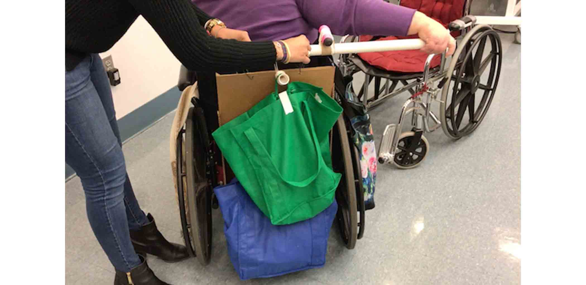
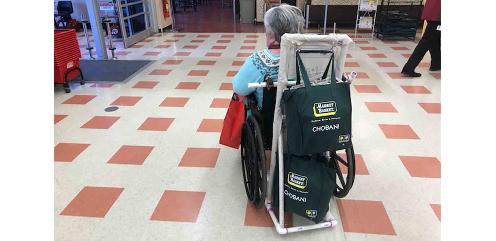

Baja SAE Offroad Racing
Shop Drop Roll LLC is developing a provisionally patented attachment for manual wheelchairs that simplifies the transport and accessibility of goods. We have received awards from the Babson BETA Challenge and Northeast ARC Foundation and were featured in Caitrin Lynch's TEDx talk on design thinking. The device was initially designed during "Engineering for Humanity," a class where students design a working prototype with and for an older adult to help improve an aspect of their life. A "deployment bar" is attached to the back of the chair, and a large frame with hooks clips into the deployment bar. After grocery shopping, a bagger loads bags onto the hooks of the frame, and the user pulls the lever on the deployment bar, dropping the frame to the ground and allowing them to spin around and access their groceries. Working with three other teammates, this project gave me the opportunity to do fieldwork with users, implement design thinking and practices, create patent drawings and designs in Solidworks, and conduct pilot testing of our prototype.
My team and I worked directly with an older woman who uses a wheelchair named Terri and derived our entire design from interactions with her that allowed us to understand her values and abilities. Teams in the class are formed around working with the specific older adults that have volunteered to work with the class, not around specific product ideas. Terri uses our prototype every time she goes grocery shopping, and is able to get out of the house more because of it.

Before we started designing for Terri we visited her home several times and went grocery shopping with her to observe and develop ideas for potential areas of opportunity. We learned that Terri places extreme value in living as independent a life as possible, and will do whatever it takes to get out of the house more often and escape "cabin fever." Grocery shopping is one outlet for this, and Terri would go grocery shopping only once or twice a month, purchasing over fifty pounds of groceries at a time to last until her next trip.
We watched Terri at the grocery store transition from her wheelchair (which she moves with her feet) to an electric scooter at the store. At the cash register she retrieves her wheelchair from the front of the store, and fills two large cooler bags. One sits on the back of her wheelchair and the other in her lap alongside a six pack of paper towels. Terri then waits thirty minutes to an hour for a wheelchair accessible bus to pick her up. We quickly recognized that we could make her grocery shopping experience less taxing and enable her to be more independent.
When the concept for a frame on the back of her chair emerged, we decided to test it quickly before moving forward. We built a cardboard frame that we could hold up to her wheelchair to get an idea for how it would look and feel. Initially we wanted the frame to hold four large bags, but did another quick test by loading and stacking shopping bags to once again capture the look and feel. Immediately we realized that many bags would not be feasible and settled for two. From there, we built a functional prototype that we had Terri test in the grocery store. We observed as the baggers struggled to understand where to place the bags, and we watched as Terri struggled to unload the heavy groceries from her chair.
We refined our product for the final prototype, adding gussets to better support the weight, an improved locking/detachment mechanism, signage to illustrate how to put bags on the frame, and other small improvements. Terri now uses our prototype every time she goes grocery shopping, buying less food in one trip and going out of the house more often. Rather than waiting for the bus with bags in her lap, Terri can now explore nearby clothing stores after getting her groceries. She even used our product to carry her eighty pounds of luggage on vacation.
Our team has since applied for a provisional patent and presented the idea to Blue Cross Blue Shield as we explore the potential to apply the idea to other wheelchair users. We recently presented the product at the 2018 Boston Abilities Expo and are currently developing custom-built products for customers while we refine our design for manufacturing. We are currently prototyping and exploring designs that uses aluminum for a greater finish and electrical actuation for people who use motorized chairs.